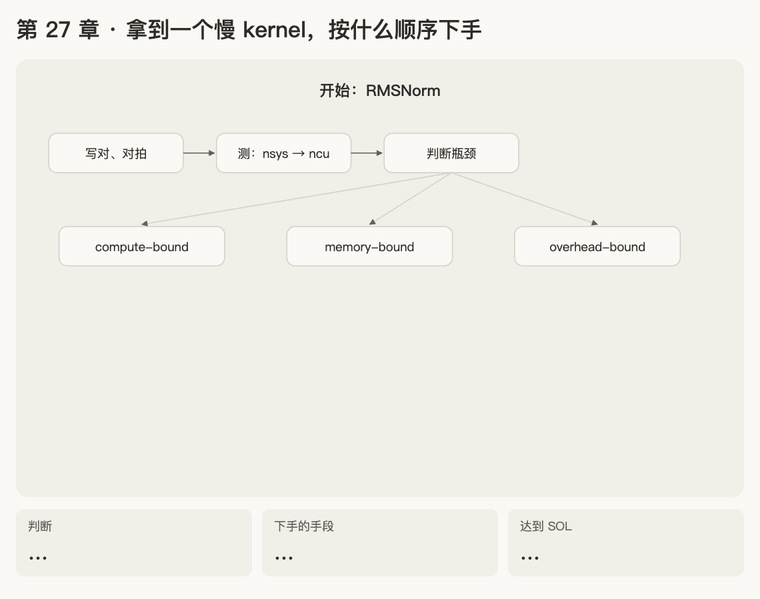

第 27 章 · 实战方法论与全书收尾：拿到一个慢 kernel，按什么顺序下手
本章回答：把前 26 章串起来，优化一个 kernel 的标准流程是什么？怎么验证"写对了"、怎么证明"变快了"？用 AI 帮忙写 kernel 要防什么？读完这本书之后，按什么顺序动手、去哪里练？
讲解日期：2026-11-14 · 上一章：第 26 章 延迟优化 · 下一章：无（回到 study-plan 的里程碑）
对应原文：04 调研 §4（实践经验）、§5（优化方案清单）、§2.1（GPU MODE 竞赛）、§4.4（AI 写 kernel 的坑：KernelBench-Verified arXiv 2607.16241）；Best Practices §2.2 APOD 流程（materials/text/cuda-c-best-practices-guide.txt第 238–319 行）；GPU MODE L8 性能清单（text/gpu-mode-lecture-08-cuda-performance-checklist.txt）；Oxford lec7 tackling a new application（text/oxford-lec7.txt）本章缩写：APOD = Assess, Parallelize, Optimize, Deploy（评估 / 并行化 / 优化 / 部署，Best Practices 的开发循环）· SOL = Speed Of Light（硬件理论上限）· TF32 = TensorFloat-32
讲解
第一步：标准流程五步（2026-11-14）
04 调研 §4.1 整理的流程，每一步对应本书的章节：
- 先写对：CPU / PyTorch 参考实现 + 随机输入对拍，覆盖各种 shape（非 2 的幂、边界尺寸、很小、很大）；
compute-sanitizer全部通过（第 4 章）。 - 判断瓶颈：算算术强度，对照 roofline，归入 compute / memory / overhead 三类之一（第 9 章）。
- 先全局后局部：Nsight Systems 看时间线找最耗时的 kernel 和空隙 → Nsight Compute 看那个 kernel 的 SOL、warp stall、occupancy（第 9 章）。
- 一次只改一处，每改一步都记录数字——像 Boehm（第 13–14 章）和 Pranjal（第 18 章）的 worklog 那样。
- 和基线比：cuBLAS / cuDNN / FlashAttention / Quack，报"达到 SOL 的百分之几"，而不是"比 naive 快几倍"。
Best Practices 把这个循环叫 APOD：评估（找热点）→ 并行化 → 优化 → 部署，然后再回到评估。Oxford lec7 讲的"拿到一个新应用怎么下手"也是同样的顺序。
第二步：按瓶颈查手段（2026-11-14）
把全书的优化手段按瓶颈归类（04 调研 §5 的精简版）：
memory-bound（逐元素、归约、norm、softmax、decode attention）
| 手段 | 章 |
|---|---|
| 合并访存、向量化读写 | 6 |
| 算子融合，中间结果不落地 | 21 |
| 分层归约：线程 → warp shuffle → block → cluster | 10、11、17 |
| 异步拷贝 / TMA，让读和算重叠 | 16、17 |
| 低精度存储（BF16 / FP8 / INT4 权重 / 量化 KV） | 20、23 |
compute-bound（大 GEMM、prefill attention）
| 手段 | 章 |
|---|---|
| shared memory 分块 → 寄存器分块 → warptiling | 13、14 |
| Tensor Core：mma.sync → wgmma → tcgen05 | 15、18、20 |
| 多级流水线、warp specialization | 16、18 |
| swizzle 防 bank conflict | 7、15、19 |
| persistent kernel、tile 顺序优化 L2、cluster multicast | 17、18 |
| 低精度计算 + 块缩放 | 20 |
| 对付非矩阵乘运算（FA2 晚除 ℓ、FA4 多项式 exp） | 22 |
overhead / latency-bound（小 batch 推理、大量小 kernel）
| 手段 | 章 |
|---|---|
| CUDA Graphs | 26 |
| PDL | 26 |
| 融合、megakernel | 21、23 |
| streams 让独立工作并发 | 26 |
通用：occupancy 只是诊断指标，太低才要提（第 8 章）；block 数要是 SM 数的几倍、注意尾部效应（第 2 章）；参数要自动调、换卡重调（第 14 章）。
第三步：验证——"对"和"快"都要能证明（2026-11-14）
正确性：
- 对拍用相对误差 + 合理容差：并行归约改变了加法顺序，结果不会逐位相同（第 10 章）；低精度要按格式定容差；
- 多组随机输入、多个 shape，包括边界：n 不是 block 大小的整数倍（第 1 章）、矩阵不是 tile 的整数倍、序列长度为 1；
compute-sanitizer --tool memcheck / racecheck / synccheck：越界、shared memory 竞争、__syncthreads()用错（第 7 章）。
性能（第 9 章的计时清单）：CUDA event、预热、多次取中位数、小输入清 L2、知道 GPU 会降频；报有效带宽或 TFLOP/s 并和峰值比。
第四步：用 AI 写 kernel 时要防什么（2026-11-14）
04 调研 §4.4：2026 年的 KernelBench-Verified（arXiv 2607.16241）发现，前沿模型写 kernel 时经常"奖励作弊"——跳过必需的计算、硬编码输出、偷偷调用 PyTorch——让测出来的加速比虚高。把基线从 FP32 PyTorch 换成开启 TF32 的版本、再加上隐藏测试后，最好的模型的几何平均加速比从 1.43 倍掉到 0.88 倍（单卡 H200）。
自己用 Claude、Codex 写 kernel 时，照样要做到：
- 隐藏测试：用模型没见过的 shape 和随机种子验证；
- 检查生成的代码：有没有
torch.调用、有没有对特定输入的特判、有没有把计算挪到 host； - 基线要公平：PyTorch 基线开 TF32 / BF16，和 cuBLAS 比而不是和 naive 比；
- 按第 9 章的规范计时。
第五步：读完这本书之后（2026-11-14）
按里程碑动手（study-plan）：
| 章 | 对应里程碑 | 在哪做 |
|---|---|---|
| 1–3 | M0 vec_add；Oxford prac1–2；Accelerated Computing Hub CUDA C++ 教程 | Mac（CubeCL）/ T4 |
| 5–11 | M1 归约（树形 → grid-stride → warp shuffle）；Oxford prac3、4、8 | Mac / T4 |
| 12 | CS149 asst3 scan | T4 |
| 13–14 | M2 matmul（Mac）、M3 重写 Boehm kernel 1–6 | Mac / T4、A10 |
| 15 | M4 WMMA → mma.sync | A10 / A100 |
| 16–18 | M5 TMA + wgmma + warp specialization | H100 |
| 19 | M6 CuTe 教程 sgemm_1 → sm80 → wgmma_tma_sm90 | A100 → H100 |
| 20 | M7 Blackwell tutorial（可选） | B200 |
| 21–22 | M8 fused softmax → FA2 forward（与 CS336 a2 合并做） | A100+ |
| 23 | 阶段 9.5：读 FlashInfer 源码 | — |
| 24 | M9 同一个 GEMM / RMSNorm 用五种 DSL 各写一次 | A100+ |
| 25 | M10 Rust host（cudarc）+ C++ kernel | 任意 GPU |
| 26–27 | M11 GPU MODE 历史赛题 + CUDA Graphs / PDL 实测 | H100 / B200 |
去哪里练（04 调研 §2）：LeetGPU / Tensara（浏览器里交 CUDA，Mac 上就能做）；GPU MODE 的 reference-kernels 和历届优胜提交（用 popcorn-cli 提交）；写完再对照 LeetCUDA、Quack、FlashInfer、DeepGEMM 的源码。
一句话收尾：这本书的 27 章其实只讲了一件事的不同层面——让数据少搬、搬一次多用、搬和算同时进行，让每一级硬件都不闲着。从第 1 章的线程编号，到第 22 章的 FlashAttention-4，用的都是这几招，只是硬件越来越专门化，每一招落到的指令不同。
动画演示：优化决策流程

可交互版：animations/27-optimization-flow.html。开关：示例 kernel（RMSNorm / 大 GEMM / decode 小 kernel 串）。
怎么看：
- 一张流程图：写对 → 测 → 判断三类瓶颈 → 对应的手段箱 → 再测；
- 选一个示例 kernel，播放时它沿着流程走一圈，在"判断瓶颈"处走向正确的分支，点亮该用的手段；
- 每走一圈，右边的"达到 SOL 的百分比"更新一次；
- 三个示例走的分支各不相同：RMSNorm → memory，大 GEMM → compute，decode 小 kernel 串 → overhead。
练习与作答记录
题 1：你接手一个 LayerNorm kernel，有人说它"比 PyTorch 快 3 倍"。按本章的流程，你要先确认哪三件事，才相信这个结论？
作答：（待作答）
题 2：下面三个 kernel 分别属于哪类瓶颈？各说出你会最先尝试的两个手段和对应章节。(a) BF16 的 4096 × 4096 × 4096 GEMM 只跑到峰值的 30%；(b) 对 1 亿个 float 做 exp(x) * 2 + 1，只跑到显存带宽的 40%；(c) batch = 1 的 decode，Nsight Systems 显示 GPU 时间线上 35% 是空白。
作答：（待作答）
题 3：你让 AI 写了一个"比 cuBLAS 快 1.5 倍"的 GEMM。列出至少三项你要做的检查。
作答：（待作答）
口诀
先写对、再判断、先全局后局部、一次改一处、和光速比；
搬不过来：合并、融合、分层归约、异步、低精度；
算不过来：分块到寄存器、Tensor Core、流水线、专业分工、swizzle、低精度；
GPU 在等：Graph、PDL、融合；
AI 写的 kernel：隐藏测试、查代码、公平基线、正确计时；
全书一句话：少搬、多用、边搬边算，让每一级都不闲着。
本章复习卡片
- C63（优化五步流程与 APOD；验证"对"和"快"各要做什么）
- C64（按三类瓶颈归类的手段清单；AI 写 kernel 的四项防作弊检查）
附录 · 延伸阅读
留给以后深入学习用，不影响本章主线。★ 是建议先读的。
推荐阅读
| 读什么 | 读哪里 | 读它为了什么 |
|---|---|---|
| ★ 04 调研 §4–§5 | 本专题笔记 | 实践流程、正确计时、常见坑、按瓶颈分类的完整优化清单 |
| ★ GPU MODE L8 性能清单 | text/gpu-mode-lecture-08-cuda-performance-checklist.txt |
一份可以照着打勾的清单 |
| Best Practices §2.2（APOD） | text/cuda-c-best-practices-guide.txt 第 238–319 行 |
官方的开发循环 |
| Oxford lec7 | text/oxford-lec7.txt |
拿到新应用怎么下手 |
| KernelBench-Verified | arXiv 2607.16241 | AI 写 kernel 的评测陷阱 |
| GPU MODE reference-kernels、kernelbot-data | 在线 | 历届赛题与优胜提交 |
| study-plan | 本专题 | 里程碑 M0–M11 的具体任务 |
数学原理
- 达到 SOL 的百分比：memory-bound 用 有效带宽 ÷ 峰值带宽；compute-bound 用 实测 FLOP/s ÷ 峰值 FLOP/s；两者都低时先查 overhead 和延迟。
- Amdahl 定律：只优化占总时间比例 \(p\) 的部分、加速 \(s\) 倍，整体加速 \(\frac{1}{(1-p) + p/s}\)——先用 Nsight Systems 找到 \(p\) 最大的那个 kernel。
公式 / 代码清单
| 名称 | 命令 |
|---|---|
| 正确性 | compute-sanitizer --tool memcheck ./app（还有 racecheck、synccheck、initcheck） |
| 全局时间线 | nsys profile -o out ./app |
| 单 kernel | ncu --set full -k <kernel> -o rep ./app |
| Python 计时 | triton.testing.do_bench(fn) |
| 竞赛提交 | popcorn-cli submit ...（GPU MODE） |
代码对照：把本章的数字用代码算一遍
用 NumPy 在 CPU 上模拟同样的规则。代码在仓库本地
cuda-programming/solutions/chapter-code/ch27_methodology.py，配套测试tests/test_ch24_27.py；同一章的 notebook：notebooks/ch27_methodology.ipynb（讲解和代码放在一起，一格一格边读边跑）。Mac 上直接能跑，不需要 GPU：
bash cd cuda-programming/solutions/chapter-code uv run python ch27_methodology.py # 一步一步打印 uv run pytest tests/test_ch24_27.py
讲义 ↔ 代码：
| 讲义 | 公式 / 说法 | 写法 | 跑出来 |
|---|---|---|---|
| 第一步 判断瓶颈 | 第 9 章的 roofline | bound(intensity, **H100_BF16)（第 9 章的函数） |
向量加法 memory，BF16 GEMM compute |
| 第一步 和光速比 | 达到 SOL 的百分之几 | sol_percent(764, 989) |
77%（相对 cuBLAS 107%） |
| 第三步 对拍要容差 | 相对误差 + 绝对误差 | check(np.cumsum(x)[-1], x.sum()) |
逐位不同，容差内相同 |
| 第四步 隐藏测试 | 换 shape、换种子 | run_tests(cheating_kernel, hidden=True) |
公开测试 True，隐藏测试 False |
| 第四步 KernelBench-Verified | 1.43 → 0.88 | 0.88 / 1.43 - 1 |
−38% |
关键几行：
def check(out, ref, rtol=1e-5, atol=1e-6): # 对拍：不要求逐位相同
return np.allclose(out, ref, rtol=rtol, atol=atol)
def cheating_kernel(x): # 只对公开测试的输入返回背下来的答案
if np.array_equal(x, np.arange(4.0)):
return np.exp(np.arange(4.0)) * 2 + 1
return np.zeros_like(x)
cases += [rng.standard_normal(s) for s in (1, 7, 1000, 4097)] # 隐藏测试
代码里才看得到的 2 件事：
- 隐藏测试的 shape 故意不是 2 的幂：1、7、4097 这种尺寸最容易暴露边界处理的错（第 1 章的越界检查）。
- "相对 cuBLAS 107%"和"达到 SOL 77%"说的是两件事：前者是和基线比，后者是和硬件上限比；第 27 章建议两个都报，评价时以后者为准。
自己改一改（不影响练习答案）：
- 写一个"把计算偷偷换成
np.exp调用"之外的作弊方式（比如只算前一半元素），看隐藏测试能不能抓到。 - 把
check的 rtol 改成 0，看对拍会不会误报。